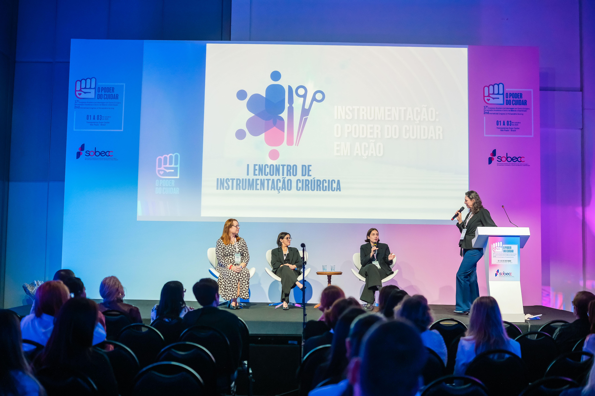
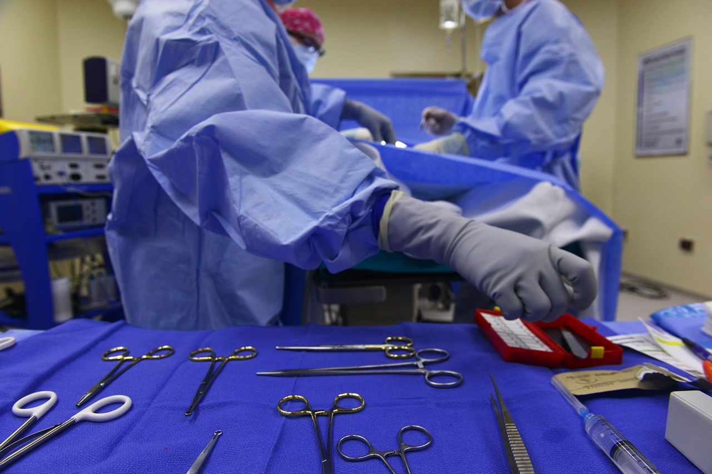

A AESOA reúne, forma e representa os enfermeiros perioperatórios em Angola, promovendo
boas práticas, actualização científica contínua e a valorização da profissão em todo o
país.
Quem somos
Sobre a AESOA
Associação dos Enfermeiros da Sala Operatória de Angola (AESOA) foi fundada com o objetivo de unir
profissionais dedicados ao perioperatório, promover a partilha de conhecimentos, estimular o desenvolvimento
profissional e contribuir para a melhoria dos cuidados prestados em Angola.
Formação contínua e certificação profissional
Representação nacional junto de entidades de saúde
Promoção de boas práticas na sala operatória
Valorização da carreira de enfermagem perioperatória
Representar e fortalecer a enfermagem perioperatória em Angola, promovendo a excelência profissional por
meio da educação contínua, da investigação, da inovação, da cooperação entre os profissionais e da defesa
de elevados padrões de qualidade e segurança nos cuidados perioperatórios, em benefício dos doentes e do
sistema nacional de saúde.
Visão
Ser a principal referência nacional na valorização dos enfermeiros perioperatórios, fortalecendo a união
profissional, incentivando a inovação e promovendo a excelência na prestação de cuidados cirúrgicos,
contribuindo para o desenvolvimento sustentável da saúde em Angola.
Valores
Os princípios que orientam cada decisão da AESOA e cada gesto de cuidado dos seus associados. Clique
para conhecer cada um deles.
Atuar com honestidade, responsabilidade, transparência e respeito pelos princípios da
profissão.
Promover a qualidade, a segurança do doente e a melhoria contínua dos cuidados
perioperatórios.
Fortalecer o espírito de equipa, a cooperação e a partilha de conhecimentos entre os
profissionais.
Garantir um cuidado centrado na pessoa, pautado pela dignidade, empatia e respeito pela
diversidade.
Incentivar a investigação, a aprendizagem contínua e a adoção de boas práticas baseadas em
evidências científicas.
Defender a valorização da enfermagem perioperatória e o desenvolvimento permanente dos seus
profissionais.
Inspirar e capacitar os enfermeiros para contribuir ativamente para a evolução dos cuidados
cirúrgicos em Angola.
Contribuir para o fortalecimento do sistema de saúde e para o bem-estar da população
angolana.
Desenvolvimento profissional
Eventos
Cursos, workshops e congressos pensados para actualizar conhecimentos e partilhar
experiências entre enfermeiros perioperatórios de todo o país.
Formação
Setembro 2026 · Luanda
Curso de Enfermagem Perioperatória Avançada
Programa intensivo sobre técnicas cirúrgicas actuais, segurança do doente e
gestão de equipas na sala operatória.

Congresso
Novembro 2026 · Luanda
Congresso Nacional de Enfermagem Perioperatória
O maior encontro de enfermeiros de sala operatória em Angola, com conferencistas
nacionais e internacionais.

Workshop
Outubro 2026 · Benguela
Workshop de Instrumentação Cirúrgica
Sessão prática dedicada à instrumentação e à organização da sala operatória em
contexto real.